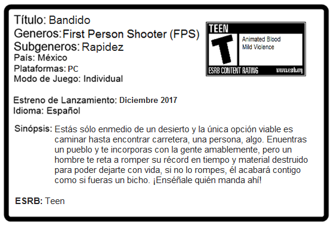
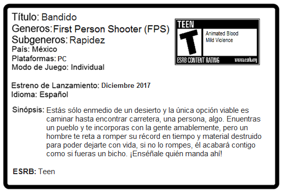
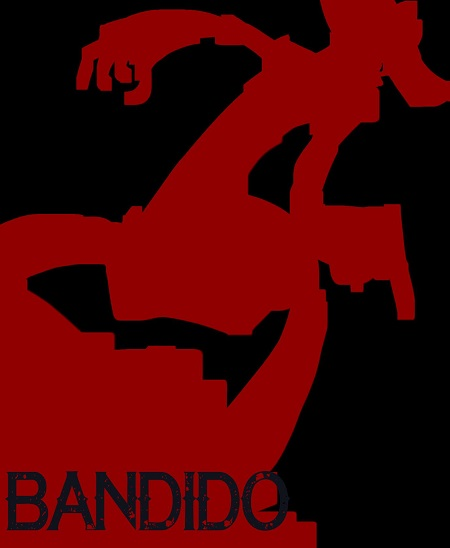
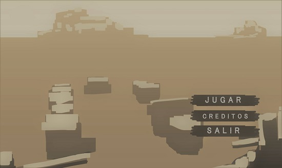
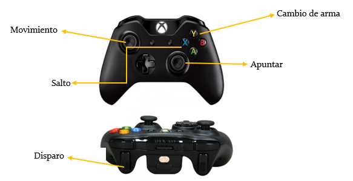
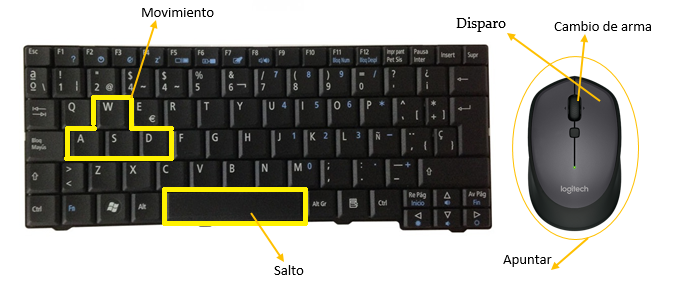

Ficha Técnica



El jugador se debe desplazar a lo largo de todo el terreno o el desierto en busca de botellas y destruirlas al dispararles. Se tiene que hacer en el menor tiempo posible, ya que se fue retado por un bandido del lugar a hacerlo en menor tiempo que él, es decir, hay que romper su récord de tiempo al destruir todas las botellas, si se llega el tiempo establecido y lo anterior no se cumple, se debe haber destruido la mayor cantidad de botellas posibles y compararlas con las del bandido en cuestión y así ganarle. De no cumplirse lo anterior el bandido le quitará la vida al jugador principal porque ese fue el reto principal. Si se cumple lo establecido entonces al jugador se le otorga un premio. El ir en busca de los objetos para destruir antes mencionados se deberá tener cuidado con las tormentas de polvo que ocurrirán y nublarán la vista del jugador, asimismo tener cuidado con las minas en el suelo por que podrían quitarle la vida al jugador antes de terminar la misión.
• No se deben matar animales (si es que hay).
• Si se destruye cualquier otro objeto (lámparas, etc) no se contaran como válidos, sólo son botellas.
• Las municiones son infinitas.
• Tormentas de arena que afectaran la buena visibilidad del jugador.
• Minas en el suelo que bajaran la barra de vida del jugador.
Al romper el récord el jugador obtendrá un premio que podrá cambiar en la página oficial del juego por puntos para comprar más juegos.

 